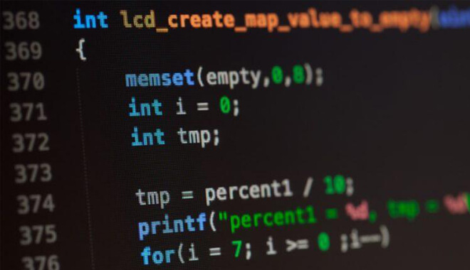
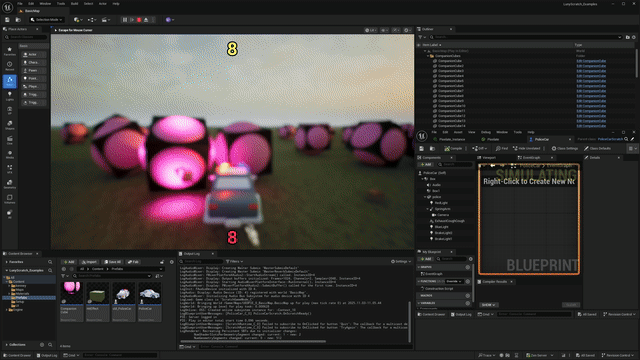

Programming and Systems

Programming makes the game function. Developers write code for movement, combat, menus, saving, enemy behavior, physics, and online systems. Strong programming keeps the game stable and responsive.
Many programmers build reusable systems so new features can be added more efficiently. This is especially important in larger projects where different mechanics must interact correctly.

Examples of Common Systems
| System | Purpose |
|---|---|
| Movement | Controls how the player navigates the game world |
| Combat | Handles attacks, damage, and defensive actions |
| Saving | Stores player progress and settings |
| User Interface | Displays menus, health bars, and inventory systems |
Good systems should be reliable, clear, and easy for players to understand.